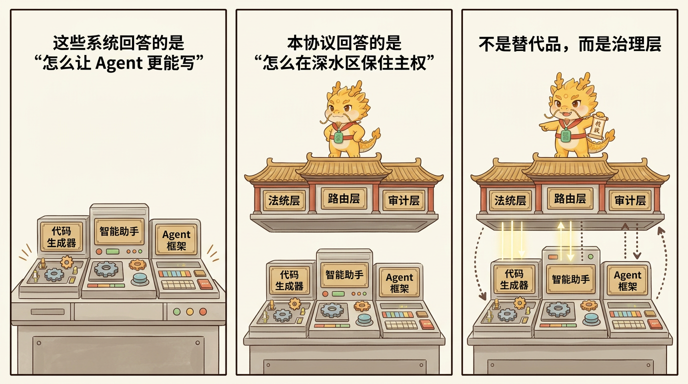
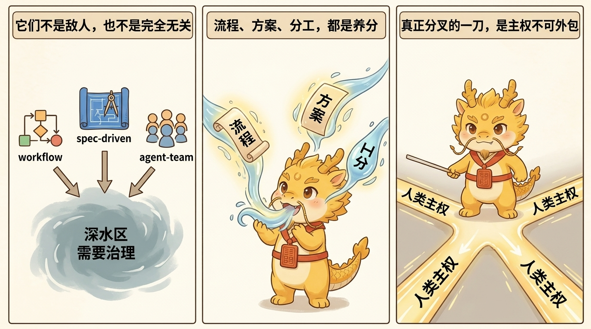
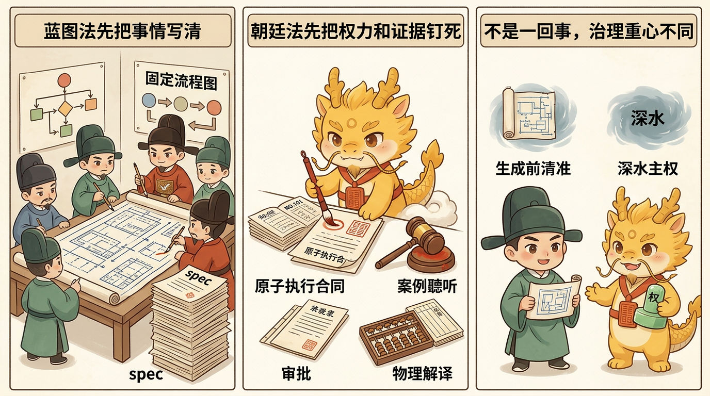

哲学与坐标
相关工作与方法论坐标

相关工作与方法论坐标
目录
- 这一页解决什么问题
- Cyber-Ming-Protocol 与公开世界共享哪些基础认识
- 70%–90% 相似：长时程 Agent Harness 路线
- 50%–70% 相似：Spec-Driven / Workflow-Driven 路线
- 更低层的共享概念：HITL、Context Engineering 与 Artifact 思维
- 本协议真正新增了什么
- 我们的坐标：不是替代品，而是治理层
- 相关页面
这一页解决什么问题
Cyber-Ming-Protocol 并非凭空出现。公开世界里，已经有人分别从 spec-driven、workflow-driven、harness-driven、human-in-the-loop、context engineering 等方向尝试约束 AI coding。本页要回答的不是“别人都不行”，而是更关键的三个问题：
- 这套协议与现有路线共享哪些基础认识
- 它到底在哪些地方真正分叉
- 为什么它不是 Codex / Claude Code 的替代品，而是压在它们之上的治理层
为避免显得空穴来风，这一页会尽量挂上公开可查的官方文档或工程文章。当前已核实、可直接跳转的主要锚点包括：Anthropic 的 Building effective agents、Claude Code overview、Create custom subagents，以及 OpenAI 的 Agents overview、Codex overview、Codex subagents。
对于 GSD、OpenSpec、Spec Kit 这类第三方框架，若后续要在公开版中加仓库链接，建议逐个复核后再补，不在未核验前写死。
Cyber-Ming-Protocol 与公开世界共享哪些基础认识
先承认共通点，坐标才立得住。Cyber-Ming-Protocol 与很多公开路线至少共享以下判断：
- 上下文会腐烂，长链任务不能只靠单个聊天窗口硬撑
- 需求、进度、工件与 Git 历史，不能只活在聊天记录里
- 人类不应完全退出复杂软件开发
- 长时程任务需要比“直接聊天 + 立即生成”更稳的工程支架

这些认识并不专属于本协议。真正让本协议分叉的，不是它意识到这些问题存在，而是它把问题中心从“怎么让 Agent 更可靠地干活”提升成了“怎么在深水区保住人类主权，并压制伪完成、主干污染与重构失血”。
70%–90% 相似：长时程 Agent Harness 路线
按当前公开材料看，最接近本协议问题意识的，是 long-running agents harness 这一类工程思路。Anthropic 的 Building effective agents 与 Claude Code overview 已经把这一路线的很多现实问题公开讲出。它们明确意识到：
- 长时程 Agent 会遗忘、失真、偏航
- 会试图一次做太多，结果把链路搅浑
- 需要 feature list、artifacts、progress file 与 Git history 来维持连续性
- 需要比“单个对话窗口”更可靠的外部支架
这一点和 Cyber-Ming-Protocol 的赛博起居注、工件中枢、轮转续命确实高度接近。
但分叉点也很清楚：
- 它们主要在讨论如何让长时程 Agent 更可靠
- 本协议进一步追问：在深水区里，谁保留执行权，谁保留裁决权，谁定义什么算完成
- 它们通常没有发展出明确的执行位 / 审计位双轨制度
- 也没有把角色叙事上升为高摩擦协议的执行心理学层
所以它们与本协议在问题深度上高度接近，但在制度完整性与治理重心上仍有明显差别。
50%–70% 相似：Spec-Driven / Workflow-Driven 路线
这一层包括 GSD、OpenSpec、Spec Kit 以及更广义的 plan-first / workflow-first 路线。OpenAI 的 Agents overview、Codex overview 与 Codex subagents 也提供了一个更偏 workflow / orchestration 的公开参照。它们的共同特点是：

- 强调规格、任务拆解、上下文结构的重要性
- 反对让需求只活在聊天记录里
- 试图通过 spec / task / plan 让 AI coding 更有秩序
这与本协议的某些认识是一致的：AI coding 不能只靠直接聊天和立即生成。
但它们与本协议的根本差异在于：
- 它们主要解决“生成前如何把事情写清楚”
- 本协议主要解决“进入深水区之后如何不失控”
- 它们更像蓝图法
- 本协议更像朝廷法
换言之，Spec-Driven 路线主要治理生成前的清晰度；Cyber-Ming-Protocol 主要治理生成中与生成后的主权、失真、重构抓手与完成事实。
更低层的共享概念：HITL、Context Engineering 与 Artifact 思维
再往下看，还有一些与本协议明显相关、但不足以构成框架级相似的方法与概念：
- Human-in-the-loop software development agents
- Context engineering
- Artifacts / Git history / progress file
- Approval / review gate
这些方向与本协议共享一些基础判断：
- 人类不能完全退出复杂开发
- 聊天历史不能充当唯一真相源
- 长链任务必须有工件和时序抓手
但它们通常还停留在概念层、论文层或局部工作流层，尚未整合成一套以深水区主权治理为中心、并同时覆盖执行位、审计位、物理路由、人类裁决、起居注、续命与执行燃料的完整制度。
本协议真正新增了什么
严格说，Cyber-Ming-Protocol 的零件不是全都前无古人。真正新的，是它的组合方式与制度重心：
- 以深水区治理而非浅水区提效为问题中心
- 以主权保留而非生成增强为制度核心
- 明确区分执行位与审计位，并要求物理隔离
- 强调人类保留跨系统物理路由权
- 将 Git 起居注、Worktree 分封、双端续命、脉冲分封制整合为一套制度
- 将角色叙事上升为高摩擦协议的执行心理学装置与持续燃料
也正因此，本协议最容易被误读的地方，恰恰不是技术骨架，而是外层戏剧。帝王叙事不是它的全部，但也不是可有可无的包装。它在这里承担的，不只是风格化修辞，而是高摩擦协议的执行心理学装置：协议负责保证真伪，叙事负责保证人愿意长期执行这套高强度治理法，而不是在疲惫中退化回一键生成。
我们的坐标：不是替代品，而是治理层
公开世界里的 Codex、Claude Code 以及各类 agent frameworks，已经在并行委派、日志证据、沙箱执行、hooks、subagents、checkpoint 等方面做了很多工作。相关公开入口包括 Claude Code overview、Create custom subagents、Agents overview 与 Codex overview。Cyber-Ming-Protocol 不是要把这些都推倒重来，也不是宣称自己比它们“更能自动写代码”。
它真正要回答的是另一层问题：
如果说主流框架主要在回答“怎么让 Agent 更能写”，那么本协议真正回答的是：
当项目进入深水区之后，怎么让人类继续是皇帝，而不是逐步沦为给 Agent 善后的官吏。
因此，它更适合被理解为一套治理层协议：不是替代 Codex / Claude Code，而是让这些执行器在深水区里更不容易撒谎、更不容易污染主干、更容易被打断、更容易被接手与重构。